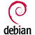
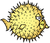

Opt out of PRISM, the NSA’s global data surveillance program. Stop the American government from spying on you by encrypting your communications and ending your reliance on proprietary services.
Web browser
Proprietary
-
 Apple Safari
Apple Safari -
 Google Chrome
Google Chrome -
 Microsoft Internet Explorer
Microsoft Internet Explorer
Free alternatives

Notes
Use a combination of Tor Browser and another free browser to surf the web. Try to use Tor for everything. Browsing the web may be a bit slower, but it's far more secure.
Note that using Tor Browser to log into PayPal or a banking website may trip the website's fraud protection software.
Users of Tor Browser should also be aware that logging into HTTP (instead of HTTPS) websites may result in your credentials being captured by a malicious exit node.
Note that Firefox uses Google search by default. Google search should be replaced by more private alternatives.
Why are Chromium, SRWare Iron, et al. not recommended on PRISM Break? More info here.
Web browser add-ons
Free alternatives
-

HTTPS Everywhere
Encrypts your communications from thousands of websites.
-

Adblock Edge
Block advertisements on the web.
-

Disconnect
Stop third-party sites from tracking you.
-

NoScript
Only enable JavaScript, Java, and Flash for sites you trust.
-
RequestPolicy
Control which cross-site requests are allowed by sites you visit.
Notes
Safeguard your privacy and stop websites from tracking you by installing Adblock Edge, Disconnect, and HTTPS Everywhere in your browser.
Why not Adblock Plus? Adblock Plus shows “acceptable ads” by default, and uses more memory than Adblock Edge.
Why not Ghostery? Ghostery is a proprietary plugin. Use Disconnect instead.
Web search
Proprietary
-
 Google Search
Google Search -
Microsoft Bing
-
 Yahoo! Search
Yahoo! Search
Free alternatives


Notes
Unfortunately, there's no truly viable free alternative for web search at the moment.
DuckDuckGo is partly proprietary (open source parts here), hosted around the world, and provides you with search results from these sources.
Startpage is proprietary, hosted in the USA/Netherlands, and provides you with anonymous Google search results (including images).
YaCy is a promising project that offers fully decentralized peer-to-peer search. The more people who start using it, the better the results will become.
Maps
Proprietary
-
 Apple Maps
Apple Maps -
Google Maps
-
Microsoft Bing Maps
Free alternatives
Notes
“If you spend time contributing to OpenStreetMap you are helping a good cause, and building a geographic database of the world which is free and open for all and forever.”
Instant messaging
Proprietary
-
 AOL Instant Messenger
AOL Instant Messenger -
Google Talk
-
 OS X Messages
OS X Messages -
 WhatsApp Messenger
WhatsApp Messenger -
Yahoo! Messenger
Free alternatives
-
Pidgin
Open source chat program. XMPP/Jabber OTR
-

Off-the-Record Messaging - OTR
Install and enable this plugin in Pidgin for encrypted chat. OTR
-

Adium
Free, multiprotocol chat client for OS X. XMPP/Jabber OTR
-

Gibberbot
Private, secure OTR messaging for Android.

-
Surespot
Free, open-source, end-to-end encrypted messaging.
-

TextSecure
Secure SMS/MMS communication for Android.
-

Xabber
OTR-encrypted instant messaging for Android.
XMPP/Jabber
-

ChatSecure
Encrypted IM for iOS devices.

Notes
“Off-the-Record Messaging, commonly referred to as OTR, is a cryptographic protocol that provides strong encryption for instant messaging conversations. OTR uses a combination of the AES symmetric-key algorithm, the Diffie–Hellman key exchange, and the SHA-1 hash function. In addition to authentication and encryption, OTR provides perfect forward secrecy and malleable encryption.
The primary motivation behind the protocol was providing deniability for the conversation participants while keeping conversations confidential, like a private conversation in real life, or off the record in journalism sourcing.”
Video conferencing & VoIP
Proprietary
-
 FaceTime
FaceTime -
 Google+ Hangouts
Google+ Hangouts -
Google Talk
-
 Skype
Skype
Free alternatives


Notes
Jitsi is a drop-in, encrypted replacement for almost all the tasks Skype is used for.
Mumble an open source voice chat client in the style of Ventrilo and TeamSpeak.
CSIPSimple and Linphone currently have unresolved security weaknesses.
WebRTC is an upcoming, promising browser to browser communications API.
Cloud storage
Proprietary
-
 Apple iCloud
Apple iCloud -
 Dropbox
Dropbox -
 Google Drive
Google Drive -
Microsoft SkyDrive
Free alternatives


Notes
Why not BitTorrent Sync? While the BitTorrent protocol is free, BitTorrent Sync is currently proprietary software.
Why not MEGA? While MEGA is free as in beer, the software is proprietary.
Why not SpiderOak? SpiderOak is proprietary software.
Why not Tarsnap? Tarsnap is partially proprietary and hosts your data on Amazon Web Services.
Document collaboration
Proprietary
-
Google Docs
-
Microsoft Office Web Apps
-
Zoho Office Suite
Free alternatives
Notes
--
Media publishing
Proprietary
-
 Flickr
Flickr -
 Instagram
Instagram -
 Picasa
Picasa -
 Tumblr
Tumblr -
 YouTube
YouTube
Free alternatives


Notes
Self-hosting your media is important for privacy and security. Hosting your blog on WordPress.com is no better for your data security than Blogger or Tumblr.
Warning: Using avatars in WordPress will activate Gravatar, which which will send your email address to gravatar.com. Avatars are activated by default and can be turned off under “Settings > Discussion > Avatars”.
Email services
Proprietary
-
 Google Gmail
Google Gmail -
Microsoft Exchange
-
 Microsoft Outlook.com
Microsoft Outlook.com -
Yahoo! Mail
Free alternatives
-

Autistici/Inventati
A full range of free, privacy-aware services. approval required
-

Bitmessage
beta
-
Kolab
Groupware server for email, calendars, address books and synchronization to mobile devices.
-
MyKolab
Secure Kolab accounts hosted in Switzerland. beta
-
Riseup
Secure and private email accounts. invitation required
Notes
Bitmessage is a promising alternative to email, but it’s is not ready for daily usage. Use at your own risk.
MyKolab is hosted in Switzerland and benefits from the strong Swiss privacy laws. It is run with free software and lets you export all your data.
Riseup is hosted in the USA. It’s also beginning to offer VPN, chat, and etherpad services.
Why not Hushmail? See 'compromises to email privacy'.
The only way to have full control over your email is to run your own mail server (e.g. with Kolab). This is not for everyone though, as it requires considerable time investment and technical knowledge.
While not complete yet, the FreedomBox project is aiming at creating a turnkey solution for encrypted communications.
Email desktop clients
Proprietary
-
Apple Mail
-
IBM Notes
-
Microsoft Office Outlook
-
 Novell Groupwise
Novell Groupwise
Free alternatives


Notes
Here is a guide to encrypting your email with Thunderbird, GNU Privacy Guard (GPG), and Enigmail.
Email encryption
Free alternatives
-

Enigmail
OpenPGP add-on for Thunderbird/Icedove.
-

TorBirdy
Make your Thunderbird/Icedove connections through Tor. experimental
-

GNU Privacy Guard - GPG
OpenPGP and S/MIME implementation for numerous frontends.
-
GPGMail
OpenPGP add-on for OS X Mail.app.
-

Mailvelope
OpenPGP browser add-on for webmail.
-
OpenPGP.js
OpenPGP library in JavaScript.
-

WebPG
GnuPG/GPG (gpg, gnupg) in your browser.
Notes
“Pretty Good Privacy (PGP) is a data encryption and decryption computer program that provides cryptographic privacy and authentication for data communication. PGP is often used for signing, encrypting and decrypting texts, e-mails, files, directories and whole disk partitions to increase the security of e-mail communications.”
S/MIME is an another email encryption scheme that may be of interest. It’s supported by default in many email clients (Thunderbird, Outlook, iOS Mail) and arguably easier to use than PGP.
Online transactions
Proprietary
-
 PayPal
PayPal -
Google Wallet
Free alternatives


Notes
The Bitcoin blockchain is a decentralized, public ledger of all transactions in the Bitcoin network.
“It may be the TCP/IP of money.” —Paul Buchheit
Web analytics
Proprietary
-
Google Analytics
Free alternatives

Notes
Piwik analytics powers this site. It‘s set up to anonymize the last two bits (255.255.???.???) of visitor IPs. Check out the live data here: prism-break.org/analytics and view our privacy policy.
DNS provider
Proprietary
-
Google Public DNS
Free alternatives
Notes
Google Public DNS permanently logs your ISP and location information for analysis. Your IP address is also stored for 24 hours.
Darknet
Free alternatives


Notes
“A darknet is an anonymizing network where connections are made only between trusted peers.
Darknets are distinct from other distributed P2P networks as sharing is anonymous, and therefore users can communicate with little fear of governmental or corporate interference.“
Meshnet
Free alternatives
Notes
A meshnet is a decentralized peer-to-peer network, with user-controlled physical links that are usually wireless.
“Mesh networking (topology) is a type of networking where each node must not only capture and disseminate its own data, but also serve as a relay for other nodes, that is, it must collaborate to propagate the data in the network.”
Android
Proprietary
-
Google Android
-
Google Play
Free alternatives

Notes
CyanogenMod licensing: “CyanogenMod does still include various hardware-specific code, which is also slowly being open-sourced anyway.” —Wikipedia
F-Droid is a free alternative to the Google Play app store.
iOS
Proprietary
-
Apple iOS
Free alternatives

Notes
iOS is insecure, and unfortunately there aren‘t a lot of free encryption apps available for iOS either. It‘s also impossible to verify whether if an iOS app was compiled from the original source.
Operating system
Proprietary
-
 Apple OS X
Apple OS X -
Google Chrome OS
-
 Microsoft Windows
Microsoft Windows
Free alternatives
-
Arch Linux
Lightweight and flexible GNU/Linux distribution.
-

Debian
Popular ethical GNU/Linux distribution.
-

Fedora
Fast, stable, powerful GNU/Linux distribution.
-

Linux Mint
Comfortable and easy-to-use GNU/Linux distribution. newbie’s choice
-

OpenBSD
A secure BSD operating system.
-
Trisquel
FSF endorsed, user-friendly GNU/Linux distribution.
-
Qubes OS
Fedora/Xen-based OS designed to provide strong security through isolation.
Notes
Live CDs & VM images
Proprietary
Free alternatives

Notes
XMPP Server
Proprietary
Free alternatives
Notes
“Extensible Messaging and Presence Protocol (XMPP) is a communications protocol for message-oriented middleware based on XML (Extensible Markup Language). The protocol was originally named Jabber, and was developed by the Jabber open-source community in 1999 for near real-time, instant messaging (IM), presence information, and contact list maintenance. Designed to be extensible, the protocol has also been used for publish-subscribe systems, signalling for VoIP, video, file transfer, gaming, Internet of Things applications such as the smart grid, and social networking services.”
SIP Server
Proprietary
Free alternatives
Notes
“The Session Initiation Protocol (SIP) is a signaling communications protocol, widely used for controlling multimedia communication sessions such as voice and video calls over Internet Protocol (IP) networks.”
What is “free software”?
“Free software” means software that respects users’ freedom and community. Roughly, the users have the freedom to run, copy, distribute, study, change and improve the software. With these freedoms, the users (both individually and collectively) control the program and what it does for them. (more …)
—The Free Software Foundation
Take action against PRISM.
MASSIVE SURVEILLANCE EXPOSED
Recent reports by the Guardian and the Washington Post confirm secret spying programs on phone records and Internet activity. It‘s time for a full accounting of America’s secret spying programs—and an end to unconstitutional surveillance. (more …)
—The Electronic Frontier Foundation
Mentioned by the media.
Catalan
- “Alternatives per a esquivar el programa nord-americà d'espionatge global.” VilaWeb. 2013-06-12.
German
- “Wie Sie im Netz anonym und sicher bleiben.” Zeit Online 2013-07-11.
- “United Stasi of America.” der Freitag. 2013-06-27.
- “PRISM-Break: Mit dieser Software der NSA-Spionage entgehen.” Netzpolitik.org. 2013-06-11.
- “Prism-Break: So surfen sie an der NSA vorbei.” Meedia. 2013-06-12.
- “Diese Dienste schützen vor Datenspionage.” STERN.DE. 2013-07-04.
- “PRISM Break: Diese Tools und Dienste schützen eure Privatsphäre” t3n. 2013-07-09.
- “Wir demonstrieren. Deal with it!” Piratenpartei Berlin. 2013-06-18.
- “Diese Programme sperren Lauscher vom US-Geheimdienst aus.” PC-WELT. 2013-06-12.
- “Gut gerüstet gegen Datenklau.” Ratgeber ARD.de. 2013-07-03.
- “Wie man der NSA-Spionage entkommen kann.” futurezone.at. 2013-06-16.
- “Sechs-Punkte-Plan für ein freies Netz: Europäische Piratenparteien starten europaweite Kampagne gegen Prism und Tempora” Piratenpartei Deutschland. 2013-06-29.
- “Wie bewege ich mich sicher im Netz?.” Aktuelle Stunde WDR.de. 2013-06-14.
English
- “PRISM fears give private search engine DuckDuckGo its best week ever.” VentureBeat. 2013-06-13.
- “Looking to hide online? PRISM-break shows you how.” Telecoms Tech. 2013-06-14.
- “How to Block the NSA From Your Friends List.” Slate. 2013-06-17.
- “TECH NOW: How to fly under the radar online” USA TODAY. 2013-06-30.
- “Site of the day: prism-break.org.” Max Keiser Financial War Reports. 2013-06-11.
- “Opt Out Of PRISM website launched; recommends alternative software & services” TWCN Tech News. 2013-06-16.
- “The Snowden Controversy and Our Legacy of Choices” Counterpunch. 2013-07-03.
- “How To Become Invisible To The NSA's Domestic Spying Program” Business Insider. 2013-06-16.
- “The Anonymous Internet: Privacy Tools Grow in Popularity Following NSA Revelations” TIME.com. 2013-06-20.
- “Why Is the Media So Silent About the Content of Edward Snowden's NSA Leaks?” The Huffington Post UK. 2013-07-05.
- “How to opt out of PRISM, the NSA’s spying program.” Network World. 2013-06-10.
- “How to break out of PRISM.” InfoWorld. 2013-06-14.
- “21st Century Industrial Complexes, part 2: Surveillance, Cyber-Spying and the National Stasi Agency.” Sott.net. 2013-06-27. “Prism Break.” Hacker News. 2013-07-09.
- “Don’t Trust Tech Companies With Your Data? Use These Alternatives.” WebProNews 2013-06-10.
- “How To Get Out Of PRISM and Avoid NSA Spying” SiliconANGLE. 2013-06-12
- “How to opt out of PRISM, the NSA’s global data surveillance program.” Reddit. 2013-06-10.
French
- “PRISM — Comment passer entre les mailles de la surveillance d’Internet ?” Le Monde. 2013-06-11.
- “Comment échapper à la surveillance de Prism?” RFI. 2013-07-03.
- “PRISM : la fronde s'organise en Europe et aux Etats-Unis” ZDNet.fr. 2013-06-12.
- “Comment se rendre invisible du réseau PRISM?” RTBF Medias. 2013-06-24.
- “PRISM : des logiciels et services alternatifs pour limiter la surveillance.” Numerama. 2013-06-11.
- “Surveillance : comment contourner le programme Prism.” Rue89. 2013-06-11.
- “PRISM – Comment passer entre les mailles de la surveillance d’Internet ?” WikiStrike. 2013-06-11.
Spanish
- “PRISM: qué es, posibles consecuencias, cómo evitarlo” alt-tab. 2013-06-17.
- “De PRISM también se sale.” Barrapunto. 2013-06-12.
- “Mozilla, Reddit y EFF lanzan Stopwatching.Us, una campaña en contra de PRISM.” Genbeta. 2013-06-12.
- “Anonymous publica información personal de miembros de la NSA en Twitter.” Pijamasurf. 2013-07-10.
- “Prism-break: para escapar del espionaje estadounidense” cba24n. 2013-07-10.
Italian
- “Prism, ecco come sfuggirgli.” Wired.it. 2013-06-14.
- “PRISM Break, lista delle alternative “sicure” ai servizi e ai software “spioni”.” Geekissimo. 2013-06-16.
- “Blocca il controllo del governo USA sulle tue attività online. Liberati da Prism!.” Informare per Resistere. 2013-07-08.
- “PRISM, ecco alcuni consigli su come proteggere la propria privacy.” Tech Fanpage. 2013-06-17.
Dutch
- “Website wijst hoe je van spionage PRISM afkomt.” ZDNet.be. 2013-06-11.
- “Website biedt alternatieven om PRISM-spionage te voorkomen.” PCM. 2013-06-10.
- “Prism-break.org: Voorkom PRISM-spionage” Computer Idee. 2013-06-13.
- “Ontwerper zet 'NSA-vrije' software op een rij.” Trouw. 2013-06-12.
Polish
- “Nie daj się szpiegować - PRISM BREAK.” strims.pl. 2013-06-12.
- “Nie daj się szpiegować - PRISM BREAK.” Wykop.pl. 2013-06-11.
- “* “nieszpiegujące” zamienniki oprogramowania.” Niebezpieczenik.pl. 2013-06-17.
Portuguese
- “Ativista da web cria lista de serviços para fugir do monitoramento dos EUA.” Globo Tecnologia e Games. 2013-07-08.
Russian
- “Как защититься от онлайн-слежки” DW.de. 2013-06-14.
Swedish
- “11 sätt att undvika NSA:s spionerier” PC för Alla. 2013-06-19.
Chinese (Simplified)
- “如何避开网络跟踪和隐藏网络痕迹.” Solidot.pl. 2013-06-17.
Social networking
Proprietary
Free alternatives
pump.io
Self-hosted social stream server.
buddycloud
Open source, federated social network. XMPP/Jabber
Diaspora
Community-run, distributed social network.
Friendica
Privacy respecting, distributed, federated social network.
GNU Social
Self-hosted, decentralized social network.
Lorea
Distributed and federated social nodes.
Movim
Private, decentralized social network server. XMPP/Jabber
RetroShare
Free, secure, P2P communications platform.
Salut à Toi
Multi-frontend, multipurpose communication tool. XMPP/Jabber
Tent
Free, autonomous social network protocol.
Notes
For those of you without your own server, RetroShare is the easiest way to start your own encrypted social network.
identi.ca is a popular Twitter-like social networking hub for the free and open source software community. The site is converting to the pump.io software platform sometime this week.